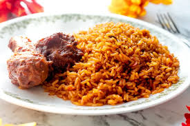

Jollof Rice Recipe
Jollof rice was probably first cooked during the 14th century in the Wolof empire, which had risen in the previous century in what is now inland Senegal. Rice cultivation thrived in the Wolof empire and formed the basis of many dishes. One of those was thiéboudienne or thiebou dieun, a dish made by cooking rice with fish, shellfish, and vegetables; the word thiéboudienne comes from the Wolof words for rice, ceeb or thiebb, and fish, jën. As the Wolof empire expanded, the dish spread throughout the region, and different ingredients and cooking methods were introduced. Eventually, the new interpretations of thiéboudienne came to be known as jollof, a variant spelling of the dominant Jolof state in the Wolof empire. It should be noted that jollof rice did not replace thiéboudienne, which differs by its necessary ingredient of fish and is sometimes called the “national dish of Senegal.” Some consider jollof rice to be a stripped-down, simplified version of thiéboudienne, which can take much longer to prepare. Others include thiéboudienne under the umbrella of jollof rice.
My Source
Decription of Jollof
Jollof rice is a popular West African one-pot dish of rice cooked in a flavorful, smoky tomato and pepper-based stew, often with onions, spices, and other ingredients like meat or vegetables.
Ingredients
- 4 cups long-grain parboiled or Sella Basmati rice, rinsed thoroughly
- 4-5 cups rich chicken or beef broth
- 6 medium tomatoes (or 1 can of plum tomatoes)
- 4 large red bell peppers, deseeded
- 1 medium onion, roughly chopped
- 2 scotch bonnet or habanero peppers (adjust to taste)
- ¼ cup water
- ½ cup vegetable oil
- 1 medium onion, sliced
- 4 tbsp tomato paste
- 3-4 Maggi or Knorr bouillon cubes, crushed
- 1 tbsp curry powder
- 1 tbsp dried thyme
- 2-3 bay leaves
- 1 tsp salt (or to taste)

Directions
- *Prepare the Pepper Mixture*: Combine tomatoes, red bell peppers, chopped onion, and scotch bonnets in a blender. Blend until smooth, adding a little water if needed. Transfer the mixture to a pot and simmer until it thickens into a sauce.
- *Rinse the Rice*: Rinse the rice under warm water until the water runs clear. Drain and set aside
- *Sauté the Aromatics*: Heat oil in a large pot over medium heat. Add sliced onions and sauté until fragrant. Stir in tomato paste and cook for 5-10 minutes, until it darkens and the oil separates.
- *Simmer the Sauce*: Add the pepper mixture, bouillon cubes, curry powder, thyme, and bay leaves to the pot. Cook for 10-15 minutes, stirring occasionally, until the oil rises to the surface and the raw pepper smell dissipates.
- Combine and Cook*: Add the broth to the pot and bring to a boil. Stir in the rice, ensuring it's coated in the sauce. The liquid level should be slightly above the rice.
- *Steam*: Cover the pot tightly with foil or parchment paper and a lid. Reduce heat to low and simmer for 20-30 minutes. Avoid stirring or opening the lid.
- *Add Smoky Flavor*: Once the rice is cooked, increase heat to high for 3-5 minutes to create a slightly burnt bottom layer.
- Finish and Serve*: Stir in butter (if using) and garnish with sliced tomatoes or onions. Let it rest for 5-10 minutes before fluffing with a fork. Serve hot with your favorite sides.